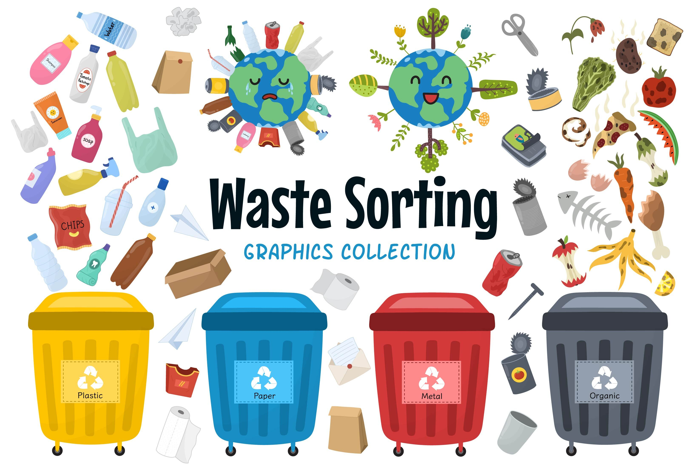
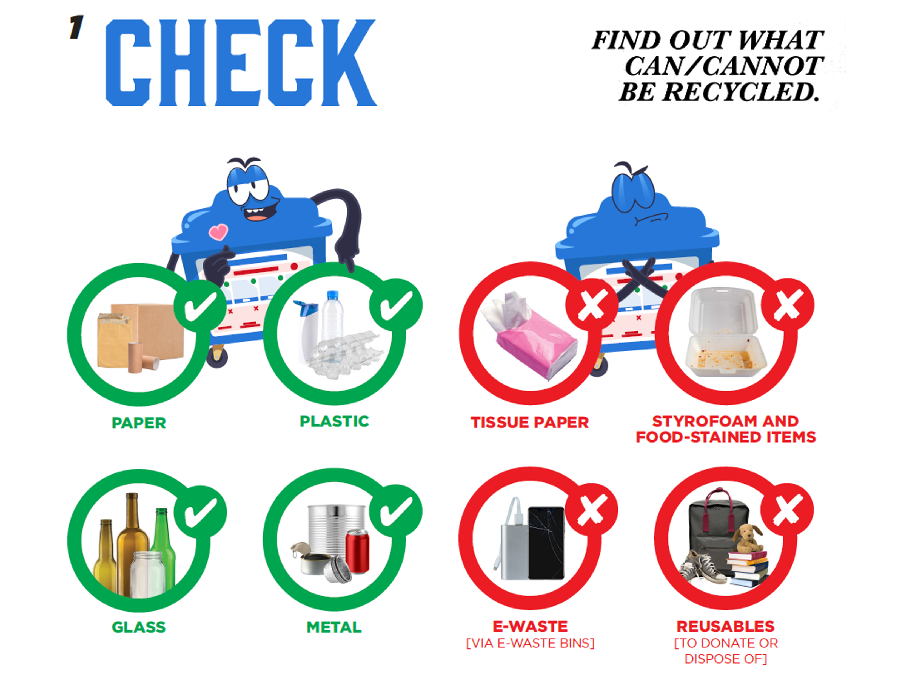
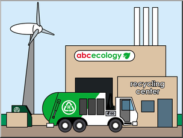
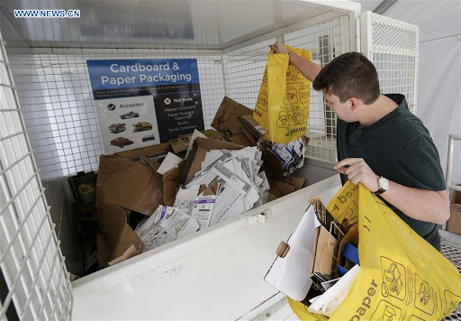

1.Collection and Sorting: Gather all the paper that you intend to recycle. Ensure that the paper is clean and free from contaminants such as food residue. Sort the paper based on type, such as office paper, newspaper, magazines, and cardboard.
2.Check Local Recycling Guidelines: Research and understand the recycling guidelines specific to your locality. Some areas may have different rules for recycling paper, and it's important to ensure compliance.
3.Find a Recycling Center: Locate a nearby recycling center or check if your community offers curbside recycling. If curbside recycling is available, follow the guidelines for preparing and placing the paper for collection.
4.Transport and Drop-Off: If taking the paper to a recycling center, transport it in a suitable container such as a paper bag or cardboard box. Drop off the paper at the designated area for paper recycling.
